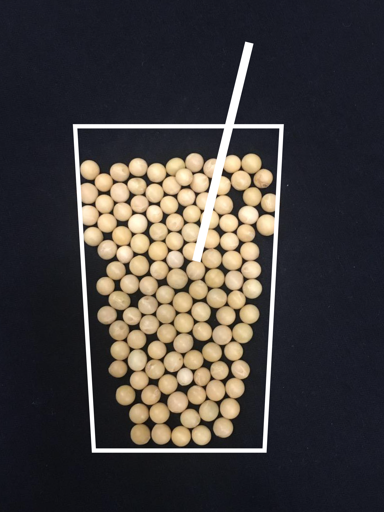

Traditional Soy Milk/Tea
| Prep time 60 min |
Cook time 30 min |
Total time 90 min |
Ingredients
- ½ cup soy bean (click image to view ingredients)
- 5 cup water
- 1 tablespoon chai tea (optional)
- 4-5 tablespoon brown sugar
- Soy milk machine (which works similarly to a combination between a home blender and an automatic coffee maker. Most soy milk makers can also be programmed to make almond milk, rice milk and other vegetable-based steeped beverages.)
Instructions
- Rinse soy beans
- Boil water
- Soak the beans in boiled water for 60 min (it tastes better this way)
- Make some chai tea with boiled water (if you prefer a soy tea instead soy milk)
- Put all beans and water in soy milk maker. (According to the manual of my soy milk maker, it's ok to both either dry beans or wet beans that have been soaked in water for hours) Let the machine do it's work for 30 min.
- Add sugar into the soy milk/tea